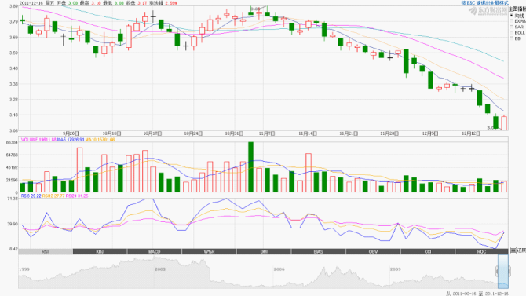

证券理论与实务选修课大作业之：上证A600006（东风汽车）技术分析
上证A600006（东风汽车）近日k线图如下所示： 
首先对历史k线图理论进行描述：
9月20日与9月21日出现缺口阳线，且21日为长阳线，说明多头占一定优势，但是21日下影线过长，恐有下跌回转的风险，果然22日出现阴线切入线，表示买方力量已尽，且22日收盘价要低于21日开盘价以及从22日开始即出现连续阴线，同时成交量同步下降，这种下跌的态势一直持续到了29日。
10月12、13、14日虽然是三条较长阳线，但涨幅日渐缩短，且影线日渐伸长，预示着反转的可能性，在10月17日出现了代表极大不确定性的十字线以后，果然出现了连续下跌，而此次下跌的态势与上述10月12、13、14日上涨的趋势极为相近，故预料又会有上涨反弹，果然从10月24日开始连续出现阳线，形成了小幅度的上涨反弹，不过因为多头力量有限，此次上涨只持续了5个交易日（其中三个交易日的长阳线，两个交易日的短阳线）即出现较不稳定的情况，虽然从10月27日到11月9日的成交价格均维持在3.83~3.89CNY之间，但是波动幅度很大，可见多头与空头之间进行了很激烈的斗争
至于后面价格的大幅度下跌，在11月初的k线上已经有显示，11月7日和8日的两条阴线都带有较长的上影线，说明从此开始多头多少有点回天乏术的感觉，果然接下来一个多月的时间，价格持续下跌，多头并无多少抵抗
接下来从k线理论、国内/国际金融环境对未来情况做一下预测：
首先上图中12月15日虽为一较长阴线，但紧随其后的16日的长阳线基本上将之包括在内，这是一个股市市场回暖的好信号，意味着多头可能采取一定过得强有力措施组织自身股价进一步下跌，故以k线理论分析此只股票在未来价格将上涨；其次，前段时期由于人民币汇率的调整使得人民币持续贬值造成大量热钱流入，同时也造成企业难以与外界进行资金与技术流通，而使得企业生产能力下降，故股价持续下跌，近日根据具体数字与官方消息解读来看人民币汇率有所提升，同时国际上面临着欧债危机等比较严重的经济紧张状况，使得欧元美元相对来说有所贬值，故人民币相对升值，从而造成A股市场回暖。
因为未来股票市场看涨，故建议抓紧时间增持或买入。